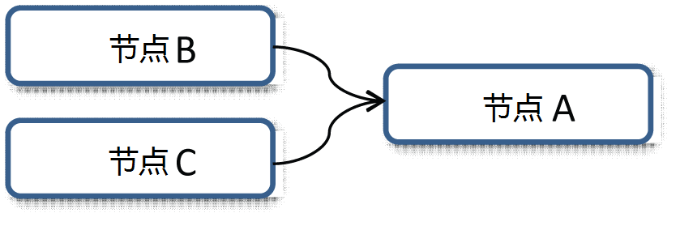

使用各种求值模式，测试您的场景是否有性能改进。请记下每种模式下的帧速率。
-
删除任何现有的首选项，并在启动时使用新默认值。
- 通过选择“显示 > 平视显示仪 > 求值”(Display > Heads Up display > Evaluation)，显示求值模式
若要测试求值模式，请执行以下操作：
- 加载场景。
- 在“首选项”(Preferences)窗口（“窗口 > 设置/首选项 > 首选项”(Windows > Settings/Preferences > Preferences)）中，选择“动画”(Animation)类别（在“设置”(Settings)下）。
- 将“求值模式”(Evaluation Mode)菜单设置为 DG，以确保处于依存关系图 (DG) 模式。
DG 模式是以前的默认求值模式。
- 在 DG 模式下播放场景，并记下帧速率。
- 切换到“串行”(Serial)模式，以确保场景正确求值；请记下帧速率。
注： 与 DG 模式相比，有时场景在“串行”(Serial)模式下运行得更慢。这是因为与 DG 模式相比，“串行”(Serial)模式对更多的节点求值。
注： 使用 FBIK 的动画将还原为串行解算，因为 FBIK 将在解算管理器中创建缺少的依存关系。由于 FBIK 已弃用，请将 HIK 用于整体反向运动学和重新设定目标。
- 如果场景看起来是正确的，则切换到“平行”(Parallel)模式。
注： 如果在“串行”(Serial)模式下场景看起来是错误的，则它不大可能在“平行”(Parallel)模式下正常工作，因为它使用求值计划，但是在所有可用核心之间分配计算。有时，“串行”(Serial)模式下不正确的求值是由使用 setDependentsDirty 管理属性污染的自定义插件导致的。
- 接下来，在仍处于“平行”(Parallel)模式时，激活
“GPU 覆盖”(GPU override)
。如果场景具有标准 Maya 变形器，或者网格的几何体是密集的，则可能存在性能增益。结果将基于场景中的变形器和网格密度而变化。
注： 可以将 GPU 覆盖求值器与串行或并行求值模式一起使用。
分析速度时：
- 使用“GPU 覆盖”(GPU override)求值模式时，请使用 Viewport 2.0。
- 禁用 Viewport 2.0 顶点动画缓存，以确定定向图表求值模式和新求值模式之间的速度增益。（若要禁用 Viewport 2.0 顶点动画缓存，请选择“Viewport 2.0 选项 > 顶点动画缓存 > 禁用”(Viewport 2.0 option > Vertex Animation Cache > Disable)。）如果 Viewport 2.0 顶点动画缓存处于活动状态，则各连续播放更快，会曲解分析。
- 禁用运动模糊，因为它会禁用“并行”(Parallel)求值模式。
解决平行模式问题
平行场景求值利用所有可用的计算资源更快地对场景求值。这可以通过使用脏传播机制从场景描述构建求值图来完成。
为了使求值图生成正确的结果，必须在 DG 中准确表达依存关系。如果节点依存关系对您的场景不正确，则平行求值将生成错误的结果，或者 Maya 可能崩溃。
例如，在节点 A 依赖于节点 B 和节点 C 的情况下，求值管理器必须在计算 A 的状态
之前计算节点 B 和节点 C 的状态。

已激活平行求值时，安全模式执行稳健测试。此安全模式可防止由无效依存关系引起的最常见类型的错误。如果安全模式检测到错误，则求值管理器将还原到串行求值模式，如 HUD 中所示。如果节点实例由多个线程同时求值，则这是安全模式还原到串行求值的一个原因。
虽然安全模式捕获了许多问题，但是它并未捕获所有的问题。因此，有一个新的分析模式，用于对场景执行更详尽（因而成本更高）的检查以检测问题。
注： 如果执行大量的 Python 命令，可能会出现性能问题。如果发生这种情况，请在环境中定义 MAYA_RETAIN_PYTHON_GIL。（MAYA_RELEASE_PYTHON_GIL 已弃用。它默认为 true，并且可被 MAYA_RETAIN_PYTHON_GIL 覆盖。）
此外，使用自定义 Python 节点对其他线程求值时，也有可能会出现 Python 性能问题。
分析模式
分析模式并不供动画师在播放或操纵装备时使用。相反，它旨在供装备师和技术总监在创建新装备时解决求值问题。
分析模式：
- 在每个播放帧上搜索错误 - 这不同于安全模式，它仅尝试识别开始平行执行时的问题。
-
监视对节点属性的读取访问 - 这样可确保节点在求值图中具有正确的依存关系结构。
- 返回诊断以便更好地了解哪些节点影响求值 - 当前此模式一次仅报告一个目标节点。
在处于串行模式时，使用以下命令激活分析模式：
dbtrace -k evalMgrGraphValid;
若要禁用分析模式，请键入以下内容：
dbtrace -k evalMgrGraphValid -off;
激活后，每次执行求值时都会发生错误检测。然后，检测到的缺少依存关系将保存到计算机的临时文件夹中的一个文件。例如，在 Windows 上，可在 %TEMP%\_MayaEvaluationGraphValidation.txt 中找到结果。
以下是一个示例报告，显示两个节点之间缺少的依存关系：
在第 56 帧上检测到的缺少依存关系
{
NodeA.output <-x- NodeB
NodeA.output <-x- NodeC [cluster]
}
在第 57 帧上检测到的缺少依存关系
{
NodeA.output <-x- NodeB
NodeA.output <-x- NodeC [cluster]
}
“<-x-”符号指示依存关系的方向。“[cluster]”项指示节点在循环簇内，这表示循环中的任何节点都可以负责求值顺序之外的属性访问
在上面的示例中，NodeB 访问 NodeA 的“output”属性，这是不正确的。这些类型的依存关系不会出现在求值图中，在平行模式下运行求值时它们可能会导致崩溃。
在分析模式下缺少的依存关系
发生缺少依存关系的情况有多种原因，其处理方式取决于导致问题的原因。如果分析模式发现场景中的错误源自由用户插件引起的错误依存关系，则重新访问策略以管理节点中的脏传播。请确保使用“巧妙”脏传播的任何尝试每次都弄脏相同的属性。避免使用不同的通知消息触发拉伸属性以进行重新计算。
有关在已设置动画的场景中识别有问题区域的信息，请参见使用分析器查找动画瓶颈。